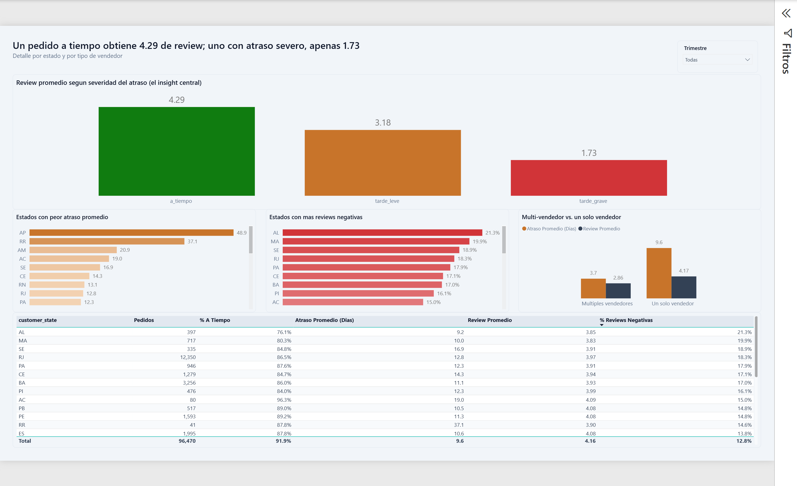

El dataset
Brazilian E-Commerce Public Dataset by Olist (Kaggle, licencia CC-BY-NC-SA-4.0): septiembre 2016 a octubre 2018, 9 tablas relacionales, ~100k pedidos, ~1M de registros de geolocalización. Limitaciones conocidas: dataset histórico y cerrado (sin comparación real periodo actual vs. anterior), ~0.5% de reseñas duplicadas por pedido, ~2% de productos sin categoría asignada, y cobertura de geolocalización incompleta para ~0.3% de los prefijos de código postal.
Arquitectura
Kaggle API → Bronze (CSV crudo) → EDA → Silver (limpio, tipado, Parquet)
→ Gold (star schema, Parquet) → Power BI (modelo semántico + dashboard)
Arquitectura Medallion completa, justificada porque el dataset tiene 9 tablas relacionales con problemas reales de calidad de datos que resolver (duplicados, tipos, agregaciones) — no un solo CSV que haría Silver y Gold redundantes.
Decisiones técnicas
- Extracción (Bronze) vía Kaggle API con un script de Python, en vez de descarga manual — mantiene la adquisición de datos documentada y reproducible como código, no como instrucción en un README.
- Limpieza y tipado (Silver) en Python/pandas puro — el dataset cabe en memoria (unos cientos de miles de filas) y las transformaciones son mayormente por fila y por tabla; SQL no habría agregado nada aquí.
- Formato Parquet, no CSV — preserva tipos (fechas, códigos postales con cero a la izquierda) sin tener que reparsear en cada lectura.
- Modelado Gold: 1 hecho (
fact_orders, grano = pedido entregado) + 2 dimensiones (dim_date,dim_geography).dim_sellerydim_productdeliberadamente no se construyeron — 1,278 pedidos tienen más de un vendedor y potencialmente varias categorías de producto, sin relación 1:1 limpia con el grano "pedido", y ningún KPI del proyecto depende de esas dimensiones. - Modelo semántico definido como proyecto PBIP/TMDL (texto plano) en vez de solo el binario .pbix, para mantenerlo versionado en Git con historial y diffs legibles por commit.
Calidad de datos
| Hallazgo | Resolución |
|---|---|
| 547 pedidos con 2 reseñas | Deduplicado en Silver, se conserva la más reciente |
| Códigos postales pierden el cero inicial al leerse como entero | Forzado a texto de 5 dígitos en Silver |
| ~1M registros de geolocalización con múltiples lat/lng por prefijo | Agregado a 1 fila por prefijo (promedio) en Silver |
| La medida "% Reseñas Negativas" contaba pedidos sin reseña como negativos | DAX trata BLANK() <= 2 como verdadero; corregido excluyendo blancos explícitamente |
Dashboard
Segunda página del reporte — Exploración Analítica: la gráfica central de barras (reseña promedio por severidad de retraso, en semáforo verde/ámbar/rojo), rankings de estados por retraso y por reseñas negativas, comparación vendedor único vs. múltiples vendedores, y una tabla de detalle explorable.

Hallazgos clave
- La logística sí explica la satisfacción: la reseña promedio cae de 4.29 (pedido a tiempo) a 3.18 (retraso leve) a 1.73 (retraso severo) — una caída del 60% en la peor categoría.
- Solo el 8.1% de los pedidos llega tarde, así que el promedio general del negocio se mantiene alto (4.16) — el problema es real pero concentrado, no generalizado.
- Alagoas, Maranhão y Sergipe tienen el mayor % de reseñas negativas (>18%), muy por encima del promedio nacional (12.8%) — estados lejos del hub logístico de São Paulo.
- São Paulo concentra ~41% del volumen de pedidos (40k de 96k) — el negocio está fuertemente centralizado geográficamente.
- Los pedidos con más de un vendedor tardan más en promedio (9.6 días de retraso vs. 3.7 para vendedor único) y reciben peores reseñas (4.17 vs. 2.86).